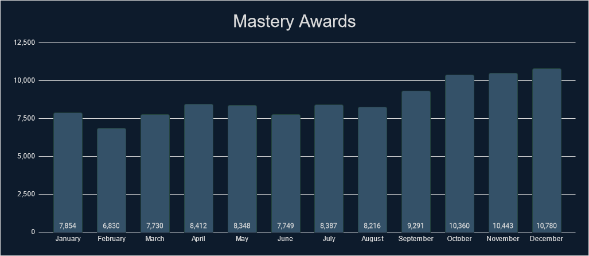

Intro
If you like looking at stats and data, then you have come to the right place. We’ve gathered tons of stats from 2023 that cover a wide range of measurable aspects that RetroAchievements offer. Check out what the community has accomplished.
General Stats
Check out some general stats from this year.
| Stat |
Value |
% Change from 2022 |
| Number of sets released. |
1,809 |
+28.42% |
| Number of achievements released. |
96,298 |
+19.54% |
| Number of hardcore achievements earned. |
10,549,784 |
+65.8% |
| Number of code notes created. |
381,891 |
+24.79% |
| Number of mastery awards awarded. |
104,400 |
+61.39% |
| Number of beaten awards awarded. |
175,100 |
+74.3% |
| Number of set requests made. |
36,275 |
+81.88% |
| Number of leaderboards created. |
28,756 |
+25.52% |
| Number of leaderboard entries submitted. |
1,490,923 |
+129.35% |
| Number of users who have earned at least 1 hardcore achievement. |
69,836 |
+56.57% |
| Number of total hardcore points earned by players. |
68,362,616 |
+60.39% |
| Number of total hardcore retro points earned by players. |
248,051,346 |
+128.91% |
| Number of user accounts created. |
266,949 |
+126.9% |
| Number of new user accounts reaching >=500 points. |
7,302 |
+67.48% |
Achievements Created
Monthly Breakdown

Console Breakdown
| Console | Achievements |
|---|
| 32X | 405 |
| 3DO Interactive Multiplayer | 96 |
| Amstrad CPC | 238 |
| Apple II | 492 |
| Arcade | 3,201 |
| Arcadia 2001 | 403 |
| Arduboy | 150 |
| Atari 2600 | 435 |
| Atari 7800 | 245 |
| Atari Jaguar | 207 |
| Atari Jaguar CD | 440 |
| Atari Lynx | 160 |
| ColecoVision | 242 |
| Dreamcast | 2,176 |
| Elektor TV Games Computer | 183 |
| Events | 688 |
| Fairchild Channel F | 73 |
| Game Boy | 2,195 |
| Game Boy Advance | 6,538 |
| Game Boy Color | 2,209 |
| Game Gear | 665 |
| Intellivision | 238 |
| Interton VC 4000 | 460 |
| Magnavox Odyssey 2 | 116 |
| Master System | 881 |
| Mega Drive | 2,263 |
| Console | Achievements |
|---|
| Mega Duck | 93 |
| MSX | 314 |
| Neo Geo CD | 1,041 |
| Neo Geo Pocket | 434 |
| NES | 5,043 |
| Nintendo 64 | 4,213 |
| Nintendo DS | 9,848 |
| Nintendo DSi | 2,201 |
| PC Engine | 533 |
| PC Engine CD | 400 |
| PC-8000/8800 | 244 |
| PC-FX | 175 |
| PlayStation | 6,174 |
| PlayStation 2 | 24,299 |
| PlayStation Portable | 6,011 |
| Pokemon Mini | 148 |
| Saturn | 511 |
| Sega CD | 344 |
| SG-1000 | 1,354 |
| SNES | 5,848 |
| Uzebox | 596 |
| Vectrex | 98 |
| Virtual Boy | 164 |
| WASM-4 | 146 |
| Watara Supervision | 52 |
| WonderSwan | 615 |
Top 25 Achievement Creators
Check out the top 25 achievement creators this year and how many achievements they created.
| Rank |
Developer |
Achievements |
| 1 |
 Bryan1150 Bryan1150 |
3,614 |
| 2 |
 Snow Snow |
2,766 |
| 3 |
 SubliminalSiren SubliminalSiren |
2,321 |
| 4 |
 Excessiveiser Excessiveiser |
1,873 |
| 5 |
 Sines Sines |
1,866 |
| 6 |
 ThatAmericanSlacker ThatAmericanSlacker |
1,829 |
| 7 |
 Delmaru Delmaru |
1,776 |
| 8 |
 timenoe timenoe |
1,710 |
| 9 |
 AlexGatao AlexGatao |
1,641 |
| 10 |
 ladynadiad ladynadiad |
1,620 |
| 11 |
 suspect15 suspect15 |
1,603 |
| 12 |
 clymax clymax |
1,588 |
| 13 |
 zxmega zxmega |
1,564 |
| 14 |
 blendedsea blendedsea |
1,549 |
| 15 |
 wolfman2000 wolfman2000 |
1,496 |
| 16 |
 Gollawiz Gollawiz |
1,487 |
| 17 |
 Amir96lx Amir96lx |
1,484 |
| 18 |
 MaddieKittyTV MaddieKittyTV |
1,383 |
| 19 |
 WanderingHeiho WanderingHeiho |
1,265 |
| 20 |
 lordpsycho lordpsycho |
1,258 |
| 21 |
 televandalist televandalist |
1,224 |
| 22 |
 DarkyAndreas DarkyAndreas |
1,223 |
| 23 |
 Dimedime Dimedime |
1,079 |
| 24 |
 Layton Layton |
1,059 |
| 25 |
 pinguupinguu pinguupinguu |
1,039 |
Top 25 Developers
Check out some stats regarding unlocks and points awarded by the developers. Included is the number of unlocks, points and retro points awarded to the players. This data includes all achievements but only counts unlocks during 2023.
| Rank |
Developer |
Unlocks Awarded |
Points Awarded |
Retro Points Awarded |
| 1 |
 Brian Brian |
251,499 |
1,837,311 |
5,326,313 |
| 2 |
Snow |
236,556 |
1,333,697 |
4,498,149 |
| 3 |
 SporyTike SporyTike |
230,061 |
1,286,612 |
4,405,404 |
| 4 |
televandalist |
226,306 |
1,728,811 |
5,498,285 |
| 5 |
 GalacticSpear GalacticSpear |
208,430 |
1,625,612 |
7,730,273 |
| 6 |
Delmaru |
205,824 |
1,094,568 |
5,354,371 |
| 7 |
 Salsa Salsa |
204,074 |
1,543,111 |
6,849,913 |
| 8 |
 dude1286 dude1286 |
190,681 |
1,552,335 |
3,247,942 |
| 9 |
ThatAmericanSlacker |
181,568 |
1,349,330 |
2,500,244 |
| 10 |
Bryan1150 |
181,394 |
1,115,732 |
3,863,457 |
| 11 |
 TeddyWestside TeddyWestside |
163,833 |
1,011,536 |
2,436,074 |
| 12 |
 Blazekickn Blazekickn |
145,150 |
802,698 |
3,409,694 |
| 13 |
 Dexterspet Dexterspet |
139,406 |
870,084 |
1,998,194 |
| 14 |
 Scott Scott |
138,634 |
683,327 |
1,485,390 |
| 15 |
 voiceofautumn voiceofautumn |
137,478 |
744,957 |
1,908,309 |
| 16 |
 wilhitewarrior wilhitewarrior |
136,599 |
1,012,623 |
3,931,721 |
| 17 |
 MGNS8M MGNS8M |
135,430 |
889,533 |
2,513,213 |
| 18 |
zxmega |
122,076 |
936,955 |
2,770,735 |
| 19 |
 gollawiz gollawiz |
114,654 |
667,866 |
6,703,691 |
| 20 |
 Altomar Altomar |
111,740 |
723,876 |
1,596,229 |
| 21 |
blendedsea |
109,819 |
585,052 |
2,591,984 |
| 22 |
 Jaarl Jaarl |
105,108 |
745,960 |
1,692,568 |
| 23 |
 jplima jplima |
99,335 |
927,295 |
2,723,314 |
| 24 |
 BrunoKiko BrunoKiko |
97,440 |
592,516 |
1,091,345 |
| 25 |
 Rewsifer Rewsifer |
93,781 |
475,809 |
835,296 |
* Hardcore only
Achievement Unlocks
Monthly Breakdown

Console Breakdown
| Console | Unlocks |
|---|
| 32X | 10,417 |
| 3DO Interactive Multiplayer | 14,067 |
| Amstrad CPC | 8,244 |
| Apple II | 10,942 |
| Arcade | 246,925 |
| Arcadia 2001 | 2,850 |
| Arduboy | 23,661 |
| Atari 2600 | 109,688 |
| Atari 7800 | 12,324 |
| Atari Jaguar | 4,703 |
| Atari Jaguar CD | 1,952 |
| Atari Lynx | 7,117 |
| ColecoVision | 7,266 |
| Dreamcast | 159,459 |
| Elektor TV Games Computer | 3,479 |
| Events | 458,002 |
| Fairchild Channel F | 11,897 |
| Game Boy | 506,986 |
| Game Boy Advance | 1,051,043 |
| Game Boy Color | 317,745 |
| Game Gear | 65,003 |
| Hubs | 573 |
| Intellivision | 5,705 |
| Interton VC 4000 | 3,885 |
| Magnavox Odyssey 2 | 5,230 |
| Master System | 83,103 |
| Mega Drive | 471,259 |
| Console | Unlocks |
|---|
| Mega Duck | 5,166 |
| MSX | 8,531 |
| Neo Geo CD | 4,115 |
| Neo Geo Pocket | 17,255 |
| NES | 1,111,310 |
| Nintendo 64 | 543,161 |
| Nintendo DS | 479,395 |
| Nintendo DSi | 13,514 |
| PC Engine | 72,706 |
| PC Engine CD | 29,818 |
| PC-8000/8800 | 7,421 |
| PC-FX | 3,160 |
| PlayStation | 1,463,249 |
| PlayStation 2 | 1,640,278 |
| PlayStation Portable | 383,562 |
| Pokemon Mini | 21,100 |
| Saturn | 47,341 |
| Sega CD | 32,918 |
| SG-1000 | 22,756 |
| SNES | 1,463,507 |
| Uzebox | 12,478 |
| Vectrex | 4,024 |
| Virtual Boy | 11,514 |
| WASM-4 | 23,768 |
| Watara Supervision | 7,690 |
| WonderSwan | 15,502 |
Top 25 Users
Check out who has the most achievement unlocks, points, and retro points this year.
| Rank |
User |
Achievements |
Points |
Retro Points |
| 1 |
Amir96lx |
18,288 |
137,706 |
419,275 |
| 2 |
 MarioKness MarioKness |
13,197 |
79,411 |
250,922 |
| 3 |
 Infernum Infernum |
12,905 |
91,970 |
253,669 |
| 4 |
 Lonoke31 Lonoke31 |
12,254 |
70,057 |
202,771 |
| 5 |
 AllKindsOfJames AllKindsOfJames |
11,899 |
88,463 |
272,755 |
| 6 |
 BrothersGames BrothersGames |
11,092 |
107,842 |
507,482 |
| 7 |
 prismfighter prismfighter |
11,002 |
61,748 |
129,831 |
| 8 |
 Sutarion Sutarion |
10,699 |
59,682 |
145,437 |
| 9 |
 Whoops Whoops |
10,605 |
56,351 |
97,181 |
| 10 |
 NEOMAR NEOMAR |
10,449 |
69,263 |
199,809 |
| 11 |
 Orph Orph |
9,998 |
66,379 |
286,411 |
| 12 |
 OldSport OldSport |
9,703 |
74,448 |
592,500 |
| 13 |
 ManyHours ManyHours |
9,559 |
71,242 |
172,687 |
| 14 |
 Sarconius Sarconius |
9,533 |
88,388 |
891,513 |
| 15 |
 Doggy227 Doggy227 |
9,210 |
60,846 |
229,169 |
| 16 |
 Grahamtams Grahamtams |
9,154 |
67,849 |
388,742 |
| 17 |
 SuperMeatBro SuperMeatBro |
9,152 |
66,796 |
166,477 |
| 18 |
 MaxMilyin MaxMilyin |
9,121 |
69,608 |
372,847 |
| 19 |
 KlydeKadell KlydeKadell |
9,050 |
56,968 |
128,732 |
| 20 |
 PenguGG PenguGG |
8,971 |
55,737 |
159,253 |
| 21 |
 GreninjaMan GreninjaMan |
8,710 |
52,021 |
326,137 |
| 22 |
 Advent Advent |
8,684 |
43,617 |
73,379 |
| 23 |
WanderingHeiho |
8,678 |
61,044 |
242,633 |
| 24 |
 manakate manakate |
8,599 |
54,636 |
151,787 |
| 25 |
 WeerDough WeerDough |
8,584 |
62,225 |
189,977 |
Top 25 Awarded Achievements
Check out which achievements were earned the most this year. Limit one achievement per game.
* Hardcore only
Top 25 2023 Awarded Achievements
Check out which achievements created in 2023 were earned the most this year. Limit one achievement per game.
* Hardcore only
Code Notes
Monthly Breakdown

Console Breakdown
| Console | Notes |
|---|
| 32X | 414 |
| 3DO Interactive Multiplayer | 373 |
| Amstrad CPC | 244 |
| Apple II | 997 |
| Arcade | 6,840 |
| Arcadia 2001 | 850 |
| Arduboy | 208 |
| Atari 2600 | 627 |
| Atari 7800 | 377 |
| Atari Jaguar | 142 |
| Atari Jaguar CD | 558 |
| Atari Lynx | 390 |
| ColecoVision | 393 |
| Commodore 64 | 4 |
| Dreamcast | 4,191 |
| Elektor TV Games Computer | 454 |
| Events | 3 |
| Fairchild Channel F | 144 |
| Game Boy | 4,837 |
| Game Boy Advance | 21,395 |
| Game Boy Color | 6,313 |
| Game Gear | 887 |
| GameCube | 778 |
| Hubs | 1 |
| Intellivision | 378 |
| Interton VC 4000 | 481 |
| Magnavox Odyssey 2 | 228 |
| Master System | 1,289 |
| Mega Drive | 6,097 |
| Console | Notes |
|---|
| Mega Duck | 70 |
| MSX | 1,118 |
| Neo Geo CD | 1,315 |
| Neo Geo Pocket | 395 |
| NES | 10,619 |
| Nintendo 64 | 7,675 |
| Nintendo DS | 44,526 |
| Nintendo DSi | 6,669 |
| PC Engine | 808 |
| PC Engine CD | 680 |
| PC-8000/8800 | 238 |
| PC-FX | 4,163 |
| PlayStation | 36,712 |
| PlayStation 2 | 118,673 |
| PlayStation Portable | 39,790 |
| Pokemon Mini | 51 |
| Saturn | 4,464 |
| Sega CD | 646 |
| SG-1000 | 1,744 |
| SNES | 12,665 |
| Uzebox | 637 |
| Vectrex | 213 |
| Virtual Boy | 191 |
| WASM-4 | 122 |
| Watara Supervision | 145 |
| Wii | 1 |
| WonderSwan | 725 |
| Xbox | 1 |
Top 10 Code Note Creators
Check out which developers created the most code notes this year.
Mastery Awards
Monthly Breakdown

Console Breakdown
| Console | Awards |
|---|
| 32X | 281 |
| 3DO Interactive Multiplayer | 407 |
| Amstrad CPC | 133 |
| Apple II | 449 |
| Arcade | 1,731 |
| Arcadia 2001 | 165 |
| Arduboy | 1,516 |
| Atari 2600 | 4,084 |
| Atari 7800 | 321 |
| Atari Jaguar | 101 |
| Atari Jaguar CD | 88 |
| Atari Lynx | 147 |
| ColecoVision | 274 |
| Dreamcast | 913 |
| Elektor TV Games Computer | 394 |
| Events | 2,363 |
| Fairchild Channel F | 1,012 |
| Game Boy | 7,715 |
| Game Boy Advance | 9,137 |
| Game Boy Color | 5,383 |
| Game Gear | 1,048 |
| Intellivision | 208 |
| Interton VC 4000 | 262 |
| Magnavox Odyssey 2 | 302 |
| Master System | 1,132 |
| Mega Drive | 5,119 |
| Console | Awards |
|---|
| Mega Duck | 123 |
| MSX | 197 |
| Neo Geo CD | 41 |
| Neo Geo Pocket | 285 |
| NES | 11,405 |
| Nintendo 64 | 5,095 |
| Nintendo DS | 4,130 |
| Nintendo DSi | 288 |
| PC Engine | 335 |
| PC Engine CD | 199 |
| PC-8000/8800 | 160 |
| PC-FX | 129 |
| PlayStation | 9,723 |
| PlayStation 2 | 6,694 |
| PlayStation Portable | 2,031 |
| Pokemon Mini | 1,609 |
| Saturn | 322 |
| Sega CD | 295 |
| SG-1000 | 1,062 |
| SNES | 11,522 |
| Uzebox | 673 |
| Vectrex | 172 |
| Virtual Boy | 341 |
| WASM-4 | 2,260 |
| Watara Supervision | 454 |
| WonderSwan | 170 |
Top 25 Mastery Awards
Top 25 Mastered Sets
Check out which sets were mastered most this year.
Beaten Awards
Monthly Breakdown

Console Breakdown
| Console | Awards |
|---|
| 32X | 329 |
| 3DO Interactive Multiplayer | 425 |
| Amstrad CPC | 247 |
| Apple II | 524 |
| Arcade | 6,866 |
| Arcadia 2001 | 237 |
| Arduboy | 1,736 |
| Atari 2600 | 5,959 |
| Atari 7800 | 473 |
| Atari Jaguar | 141 |
| Atari Jaguar CD | 102 |
| Atari Lynx | 219 |
| ColecoVision | 423 |
| Dreamcast | 2,001 |
| Elektor TV Games Computer | 444 |
| Fairchild Channel F | 1,227 |
| Game Boy | 11,264 |
| Game Boy Advance | 16,377 |
| Game Boy Color | 7,290 |
| Game Gear | 1,872 |
| Intellivision | 262 |
| Interton VC 4000 | 308 |
| Magnavox Odyssey 2 | 370 |
| Master System | 2,042 |
| Mega Drive | 9,386 |
| Mega Duck | 160 |
| Console | Awards |
|---|
| MSX | 245 |
| Neo Geo CD | 108 |
| Neo Geo Pocket | 500 |
| NES | 20,723 |
| Nintendo 64 | 8,204 |
| Nintendo DS | 6,322 |
| Nintendo DSi | 364 |
| PC Engine | 728 |
| PC Engine CD | 396 |
| PC-8000/8800 | 169 |
| PC-FX | 164 |
| PlayStation | 18,410 |
| PlayStation 2 | 13,841 |
| PlayStation Portable | 3,467 |
| Pokemon Mini | 1,860 |
| Saturn | 632 |
| Sega CD | 540 |
| SG-1000 | 1,302 |
| SNES | 21,665 |
| Uzebox | 784 |
| Vectrex | 235 |
| Virtual Boy | 419 |
| WASM-4 | 2,553 |
| Watara Supervision | 523 |
| WonderSwan | 262 |
Top 25 Beaten Awards
Top 25 Beaten Sets
Check out which sets were mastered most this year.
Set Requests
Monthly Breakdown
Console Breakdown
| Console | Requests |
|---|
| 32X | 45 |
| 3DO Interactive Multiplayer | 100 |
| Amiga | 23 |
| Amstrad CPC | 39 |
| Apple II | 99 |
| Arcade | 1,137 |
| Arcadia 2001 | 1 |
| Arduboy | 2 |
| Atari 2600 | 59 |
| Atari 5200 | 2 |
| Atari 7800 | 12 |
| Atari Jaguar | 23 |
| Atari Jaguar CD | 3 |
| Atari Lynx | 12 |
| Atari ST | 1 |
| ColecoVision | 9 |
| Commodore 64 | 8 |
| DOS | 82 |
| Dreamcast | 875 |
| Events | 17 |
| Fairchild Channel F | 11 |
| Game Boy | 314 |
| Game Boy Advance | 1,614 |
| Game Boy Color | 405 |
| Game Gear | 149 |
| GameCube | 1,026 |
| Intellivision | 16 |
| Magnavox Odyssey 2 | 7 |
| Master System | 286 |
| Mega Drive | 885 |
| Mega Duck | 4 |
| MSX | 47 |
| Neo Geo CD | 56 |
| Console | Requests |
|---|
| Neo Geo Pocket | 22 |
| NES | 967 |
| Nintendo 3DS | 213 |
| Nintendo 64 | 913 |
| Nintendo DS | 2,471 |
| Nintendo DSi | 121 |
| Nokia N-Gage | 1 |
| PC Engine | 99 |
| PC Engine CD | 154 |
| PC-8000/8800 | 24 |
| PC-9800 | 78 |
| PC-FX | 8 |
| Philips CD-i | 23 |
| PlayStation | 3,915 |
| PlayStation 2 | 14,436 |
| PlayStation Portable | 2,487 |
| Saturn | 489 |
| Sega CD | 142 |
| SG-1000 | 21 |
| Sharp X1 | 4 |
| Sharp X68000 | 12 |
| SNES | 1,852 |
| Uzebox | 2 |
| Vectrex | 7 |
| Virtual Boy | 8 |
| WASM-4 | 3 |
| Wii | 223 |
| Wii U | 45 |
| WonderSwan | 85 |
| Xbox | 71 |
| Zeebo | 3 |
| ZX Spectrum | 7 |
Leaderboards
Monthly Breakdown

Console Breakdown
| Console | Leaderboards |
|---|
| 32X | 72 |
| 3DO Interactive Multiplayer | 19 |
| Amstrad CPC | 32 |
| Apple II | 27 |
| Arcade | 663 |
| Arcadia 2001 | 140 |
| Arduboy | 27 |
| Atari 2600 | 160 |
| Atari 7800 | 57 |
| Atari Jaguar | 13 |
| Atari Jaguar CD | 57 |
| Atari Lynx | 13 |
| ColecoVision | 66 |
| Dreamcast | 419 |
| Elektor TV Games Computer | 45 |
| Events | 1 |
| Fairchild Channel F | 12 |
| Game Boy | 284 |
| Game Boy Advance | 1,339 |
| Game Boy Color | 539 |
| Game Gear | 175 |
| GameCube | 2 |
| Intellivision | 42 |
| Interton VC 4000 | 232 |
| Magnavox Odyssey 2 | 16 |
| Master System | 226 |
| Mega Drive | 402 |
| Console | Leaderboards |
|---|
| Mega Duck | 2 |
| MSX | 19 |
| Neo Geo CD | 155 |
| Neo Geo Pocket | 135 |
| NES | 991 |
| Nintendo 64 | 827 |
| Nintendo DS | 2,640 |
| Nintendo DSi | 3,125 |
| PC Engine | 52 |
| PC Engine CD | 13 |
| PC-8000/8800 | 12 |
| PC-FX | 43 |
| PlayStation | 3,281 |
| PlayStation 2 | 10,486 |
| PlayStation Portable | 2,177 |
| Pokemon Mini | 19 |
| Saturn | 200 |
| Sega CD | 29 |
| SG-1000 | 203 |
| SNES | 1,030 |
| Uzebox | 259 |
| Vectrex | 17 |
| Virtual Boy | 65 |
| WASM-4 | 27 |
| Watara Supervision | 4 |
| WonderSwan | 84 |
Top 25 Leaderboard Creators
Check out which developers created the most leaderboards this year.
 By
MrOwnership
By
MrOwnership


 TheMysticalOne
TheMysticalOne RyudoSynbios
RyudoSynbios sludgemastic
sludgemastic  Timmay
Timmay  ChocoMilk
ChocoMilk  MiningMario
MiningMario  Jungon
Jungon  Hexadigital
Hexadigital  mudrik
mudrik  GregHouse007
GregHouse007  TheGuineapigWizard
TheGuineapigWizard  Botch
Botch  bonecrusher1022
bonecrusher1022 
![Super Mario Bros. [Subset - RetroAchievements Stimulus Package] (Events)](https://retroachievements.org/Images/070569.png)


 HippopotamusRex
HippopotamusRex  danibodom
danibodom  14ausher
14ausher  Kinglink
Kinglink 


 PsyHunter29
PsyHunter29  Retrokaiser
Retrokaiser  acheaplemon
acheaplemon  Kayesay
Kayesay  GameZone
GameZone  TheJediSonic
TheJediSonic  tomojin
tomojin  Brandovsky
Brandovsky  LogicalFallacy
LogicalFallacy  valts
valts